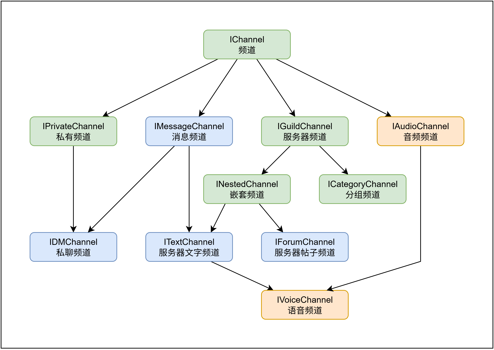

实体类型
所有 Kook.Net 实体的列表及其之间的继承关系，来表示哪些类型之间可以进行相互转换。
Note
Socket 和 Rest 实体的所有接口都具有相同的继承树，其中，图中被标记为红色的实体是其所在工程所独有的。
频道 IChannel

消息频道
- 服务器文字频道 (ITextChannel)：服务器内的消息频道
- 私聊频道 (IDMChannel)：私信聊天会话频道
- Kook.Net 中的私信聊天会话也被抽象为一个频道
- 私有频道 (IPrivateChannel)：非服务器内的消息频道
- 由于 KOOK 暂不支持讨论组，所以目前私有频道也只有私聊频道
- 消息频道 (IMessageChannel)：可以发送文字消息的频道
其它频道
- 服务器频道 (IGuildChannel)：服务器内的频道
- 这可以是能出现在服务器内的任何一种频道类型
- 音频频道 (IAudioChannel)：音频频道
- 语音频道 (IVoiceChannel)：服务器内的语音频道
- 分组频道 (ICategoryChannel)：服务器内的分组频道，可以包含多个子频道
- 嵌套频道 (INestedChannel)：可以出现在分组频道下的频道
消息 IMessage

- 用户消息 (IUserMessage)：用户所发送的消息
- 系统消息 (ISystemMessage)：KOOK 系统用户发送的消息
- 消息 (IMessage)：所有消息的基本类型接口
用户 IUser

- 用户状态 (IPresence)：用户的状态信息
- 服务器用户 (IGuildUser)：服务器内的用户
- Bot 登录用户 (ISelfUser)：当前客户端登录到 KOOK 的机器人用户
- 用户 (IUser)：所有用户的基本类型接口
其它类型
表情符号 IEmote
- Emote (Emote)：服务器内创建的自定义表情
- Example:
(emj)kaiheila-logo(emj)[1990044438283387/8BZCdG49cL069069]
- Example:
- Emoji (Emoji)：Unicode 表示的 Emoji 表情符号
- Example:
👍
- Example:
用户动态 IActivity
- 游戏 (IGame)：代表用户的游戏活动